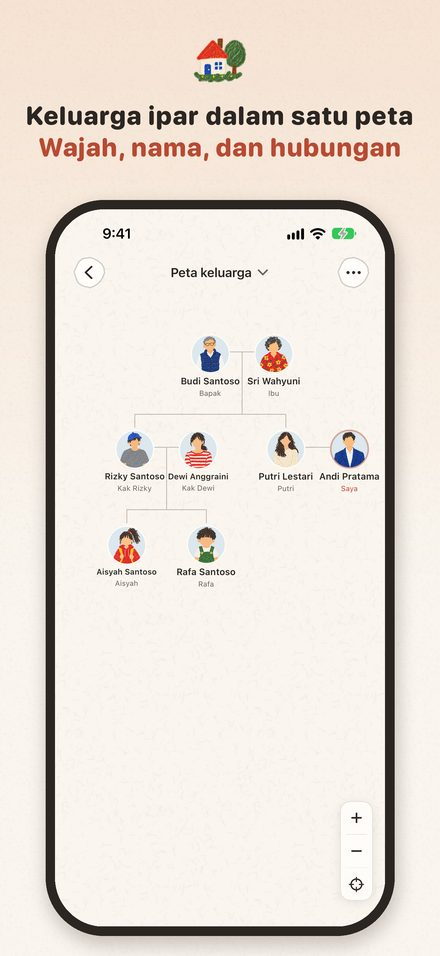
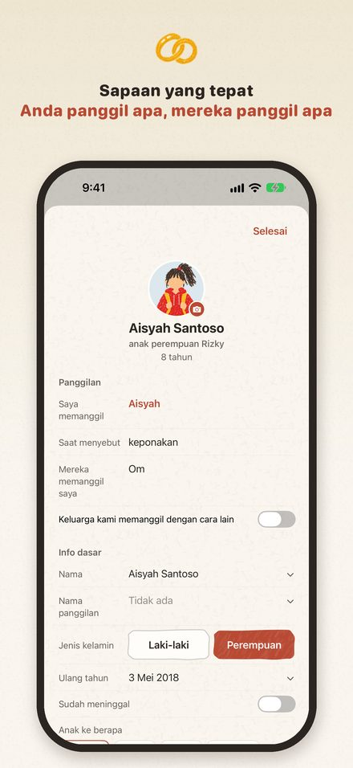
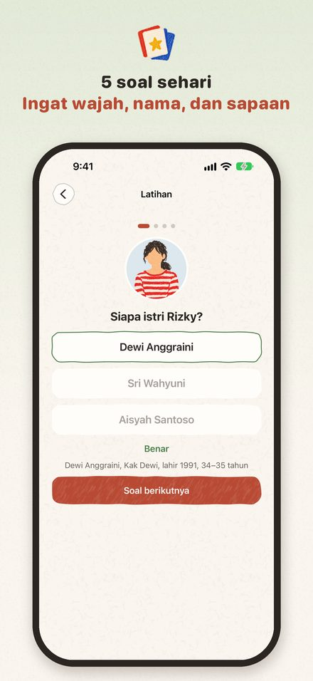
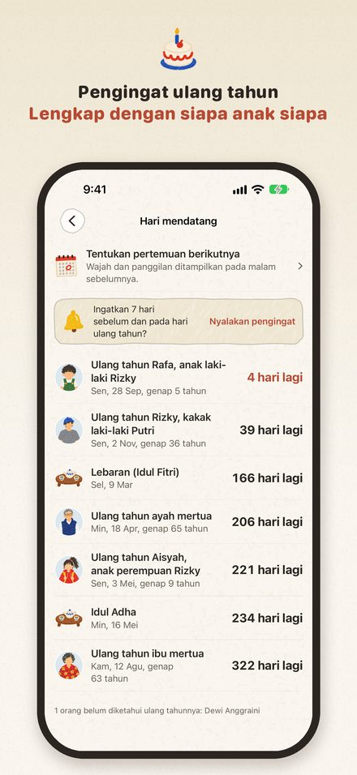

Kerabat
Nama, wajah, sapaan yang tepat
Lamaran atau Lebaran di rumah mertua? Lihat wajah, nama, dan panggilan yang tepat untuk tiap orang dalam semenit. Teks besar dan VoiceOver memudahkan kakek-nenek.
Segera hadir di App Store



Menikah berarti bertemu satu keluarga baru, dan bagian tersulitnya adalah mengingat siapa adalah siapa. Aplikasi Kerabat menyimpan keluarga pasangan Anda dalam satu peta yang hangat dan sederhana: wajah, nama, usia, ulang tahun, dan panggilan yang tepat untuk setiap orang.
Peta keluarga
- Ketuk siapa saja untuk melihat hubungannya dengan Anda dan cara memanggilnya
- Tambahkan orang tua, saudara kandung, pasangan, dan anak dengan sekali ketuk, lalu lihat petanya tumbuh
- Keluarga Anda, keluarga pasangan, teman, dan rekan kerja dibedakan dengan warna lembut
- Anggota keluarga yang telah tiada tetap ada di peta, jadi tidak ada hubungan yang terputus
Panggilan yang tepat
- Aplikasi ini tahu siapa yang lebih tua dan siapa yang lebih muda, jadi Anda tahu kapan memanggil "Kak" dan kapan cukup dengan nama, dan kakak ipar tidak tertukar dengan adik ipar
- Kebiasaan daerah juga dijelaskan: dalam keluarga Jawa, kakak dari orang tua dipanggil Pakde atau Bude, sedangkan adiknya Paklik atau Bulik
- Lihat sekilas siapa adalah siapa: "Raka, anak Kak Dimas"
- Tersedia dalam 10 bahasa, dan bahasa panggilan bisa dipilih terpisah dari bahasa aplikasi
- Kalau keluarga Anda memanggil dengan cara lain, misalnya Mas, Mbak, Abang, atau Uni, atur kata Anda sendiri
Bukan sekadar mencatat, tapi mengingat
- Kuis harian 5 soal untuk wajah, nama, dan ulang tahun
- Malam sebelum berkunjung, lihat satu per satu siapa saja yang akan Anda temui
- Pengingat ulang tahun dan peringatan hari wafat
- Hal yang belum Anda ketahui terkumpul dalam satu daftar yang bisa dikirim ke pasangan
Isi bersama
- Undang pasangan Anda untuk mengedit peta yang sama. Masing-masing melihat panggilan dari sudut pandangnya sendiri
- Edit bersama berfungsi antar-iPhone dengan iOS 26 atau lebih baru; perubahan biasanya muncul di pihak lain dalam satu menit
Mudah untuk semua
- Mendukung teks besar, Mode Gelap, dan VoiceOver, dengan tombol besar dan kontras yang jelas, sehingga kakek dan nenek pun bisa memakainya
- Melihat wajah, nama, dan hubungan keluarga sekaligus dapat membantu orang yang mengalami kesulitan mengingat, juga keluarga yang merawat mereka, untuk mengenali sanak saudara. Aplikasi ini bukan aplikasi medis dan tidak mendiagnosis atau mengobati kondisi apa pun
Privasi diutamakan
- Data keluarga hanya tersimpan di perangkat dan iCloud; keluarga yang diedit bersama tersimpan di iCloud pembuatnya. Tanpa iklan, tanpa pelacakan
- Deteksi wajah berjalan di perangkat Anda, dan hanya potongan wajahnya yang disimpan
Kerabat Pro
- Gratis hingga 10 orang per peta keluarga; Pro tanpa batas
- Peta keluarga, panggilan, kuis, foto, widget, dan edit bersama semuanya gratis
- Pro adalah pembelian sekali bayar, tanpa langganan dan tanpa perpanjangan otomatis. Dengan Akun Apple yang sama, gunakan Pulihkan pembelian di perangkat lain